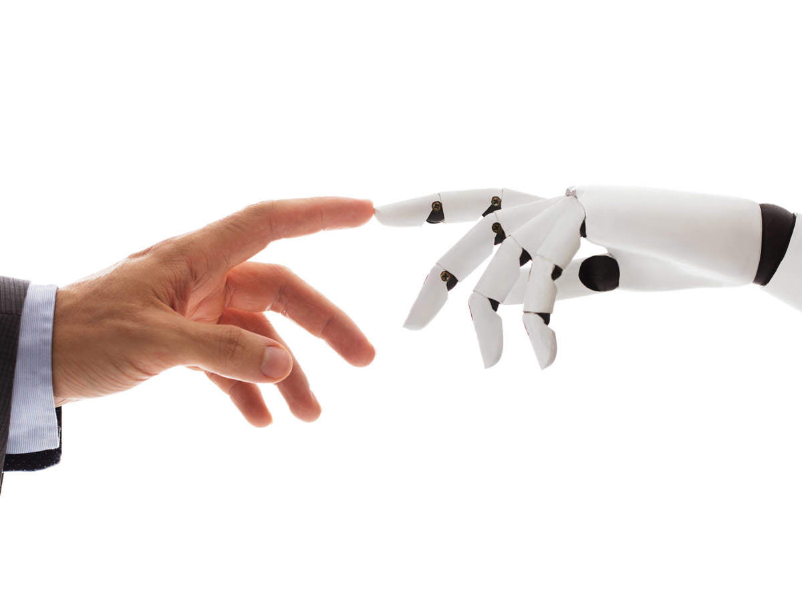

About Us

Our main goal is to educate the masses about robotics and its evolution. Many people seem to take technology for granted and the simple things go unnoticed. We are determined to change that. Share this article to help us in our journey to make people more appreciative of what they have. People will have to use technology eitherway in the future so it's best to start learning now.
Many people think robots can only do basic commands and maybe have a basic conversations with humans. But they couldn't be further from the truth. Robots can do way more than just that. For example: there are robots who are servers, robots who can fix cars etc.
There are many good things that a robot could do in the future for example: instead of having human surgeons we could make surgeon robots which operate more precisely, or people could make everyday jobs like cashier or mechanic, be operated by a machine. That could save money on the long term since they won't have to pay robots salary. Who knows really, robots could become so advanced they would become just like humans which leads to many problems
